La elaboración de queso tiene como objetivo principal preservar y concentrar los componentes nutritivos de la leche, transformándolos en un producto alimentario con elevado valor sensorial, nutricional y comercial. Este proceso da lugar a una amplia variedad de quesos, cada uno con características únicas que responden a factores como el tipo de leche, la tecnología aplicada y las condiciones de maduración.
El propósito de la tecnología quesera es optimizar esta transformación, guiando el proceso de forma que se obtenga el mejor producto posible, garantizando la calidad sanitaria, tecnológica y organoléptica, y todo ello de manera eficiente y rentable. Para lograrlo, los objetivos técnicos se centran en minimizar las pérdidas de materia, especialmente de grasa y proteína, que son los componentes clave del coste en la elaboración del queso.
En cualquier empresa quesera, independientemente de su tamaño, una de las tareas esenciales es analizar el balance global del proceso de elaboración. Para un período determinado, que, como primera aproximación, puede ser anual, resulta fundamental conocer el balance de grasa y proteína entre la leche adquirida y el queso producido. Toda la materia de la leche que no es incorporada al queso deja de ser vendible, de modo que las pérdidas durante el proceso incrementan el coste del producto final y reducen la competitividad. Además, conviene recordar que el suero prácticmente ya no genera ingresos por venta: en la actualidad, en la mayoría de los casos, es retirado sin coste por las empresas encargadas de su secado, siendo el transporte el único elemento sujeto a negociación.
Con el fin de conocer las pérdidas de materia (grasa y proteína) en nuestro proceso de elaboración, en este capítulo veremos en qué consiste el balance de materia, explicando cómo construirlo y analizarlo.
10.2 Un ejemplo
Supongamos que una empresa ha fabricado en un año unas 130 toneladas de un tipo de queso, y para ello ha utilizado la cantidad aproximada de 1.300.000 litros de leche de vaca. Los resultado analíticos del laboratorio interprofesional, utilizados en el pago de la leche, la leche que ha comprado tenía un contenido en materia grasa del 4,10% (masa/volumen) y de 3,45% de proteínas (masa/volumen). Con estos análisis, la cantidad de materia grasa y proteína que ha pagado es de \[MG:\ 1.300.000\ \cancel{L\ leche}\cdot\frac{4{,}10\ kg\ MG}{100 \ \cancel{L\ leche}}=53.300\ kg\ MG\]\[MP:\ 1.300.000\ \cancel{L\ leche}\cdot\frac{3{,}45\ kg\ MP}{100 \ \cancel{L\ leche}}=44.850\ kg\ MG\]
Vamos a suponer que los precios de la materia grasa y la proteína puestos en fábrica son los que hemos calculado en el ejemplo del capítulo anterior, 5,55 euros/kg para la MG y 9,89 euros/kg para la MP. El coste total de la leche utilizada en el año ha sido de 739.100 euros, como se muestra en la tabla siguiente:
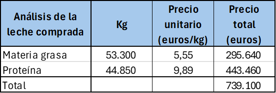
Leche comprada
Por otra parte, suponiendo que el queso se ha vendido a un precio medio neto de 12 euros/kg, la facturacion por venta ha sido de:
Esta cifra de ventas proporciona un margen de \(1.560.109-739.100=821.009\ euros\) respecto al coste de materia, que la empresa destina a pagar el resto de sus costes: salarios, energía, embalajes, alquileres, reparaciones, inversiones, etc.
Vamos a realizar ahora el balance de materia y estimar el coste de las pérdidas.
Según algunos análisis que ha hecho a lo largo del año, el queso vendido tiene un contenido en extracto seco del 63% (masa/masa) y una materia grasa del 33% (masa/masa).
AdvertenciaATENCION: Uso del extracto seco magro para el cálculo de la recuperación de proteína
Como no disponemos del análisis de proteína del queso, vamos a hacer los cálculos de la recuperación de la proteína utilizando en su lugar el extracto seco magro obtenido, que en su mayor parte está formado por la caseína de la leche que se ha transformado mediante el proceso de elaboración. Esta aproximación es un equilibrio entre la complejidad analítica del análisis de proteína del queso y la información práctica que proporciona el balance con el ESM, cuyo cálculo es mucho más sencillo ya que se basa en datos analíticos más fáciles de obtener y más habituales, como son el extracto seco total y la materia grasa.
En el análisis de las desviaciones, más adelante, veremos que la pérdida de información debida a calcular el rendimiento de la proteína de esta manera no es superior al 10%; en la casi totalidad de los casos, la experiencia nos dice que el cálculo proporciona suficiente información para las decisiones operativas.
Si se dispone del análisis de proteína del queso para todas las fabricaciones, la precisión del balance aumentará en el porcentaje referido.
Podemos utiizar los análisis del queso vendido para obtener su composición en kilos, y calcular la cantidad de materia grasa y proteína (utilizaremos el extracto seco magro) vendido, que al precio de la materia, nos permite obtener el coste de materia prima que hemos recuperado en la venta.
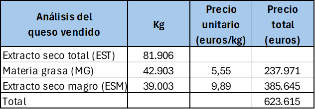
Datos del queso vendido.png
Con estas dos tablas, ya podemos construir una tabla del balance general del proceso, en el que tenemos en cuenta la materia comprada y la vendida, y calculamos el porcentaje de la materia comprada que hemos recuperado. Este coeficiente de recuperación de materia es un índice de la eficiencia de nuestro proceso y de la transformación quesera.
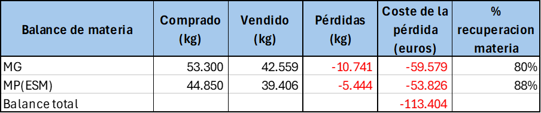
Tabla de resultados
El proceso de elaboración de nuestra empresa ejemplo ha sido capaz de recuperar un 80% de la materia grasa comprada y un 88% de la proteína, o lo que es lo mismo, ha tenido unas pérdidas de proceso del 20% de la materia grasa y del 12% de la proteína. Estas pérdidas se traducen, al coste de materia utilizado, en un total de -113.404 euros, aproximadamente un 15% de la facturación total.
El objetivo de la empresa es poner en marcha los planes de acción necesarios para recuperar la máxima cantidad posible de esas pérdidas. Comparándose con las mejores empresas (que recuperan hasta el 98% de la MG, y al menos un 95% en el caso de la proteína/ESM), la recuperación de MG y MP debería ser al menos del 90% en los dos casos. Si hacemos una simulación en una nueva tabla, los resultados con estos coeficientes de recuperación serían:
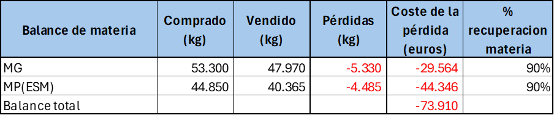
Tabla con objetivos de mejora
Las pérdidas ahora se han reducido hasta algo menos del 5% de la facturación, permitiendo recuperar \(113.404-73.910=39.494\) euros de esas pérdidas. Como ejemplo, esa cantidad permitiría la contratación de una persona, e incrementar la dotación en medios analíticos para el control de la producción, lo que a su vez podría redundar en nuevas mejoras.
Este es el objetivo del balance de materia: determinar la magnitud de las pérdidas y establecer objetivos de mejora.
SIn embargo, las cantidades anuales que hemos utilizado no nos permiten establecer en dónde se producen las pérdidas y en qué magnitudes; para establecer los planes de mejora necesitamos entrar en el detalle del proceso quesero.
10.3 Etapas en el proceso de fabricación de queso.
Las diferentes unidades de una fábrica de queso y las medidas del balance de materia
El proceso de la leche para elaborar queso empieza con el ordeño, y el almacenamiento en frío. La leche almacenada es cargada en el camión de transporte, que la lleva a la fábrica. En el momento de la carga, se toma una muestra representativa, que será analizada por el laboratorio interprofesional lechero de la zona, y que tiene como objetivo el pago por calidad, y se registran los litros cargados en la cisterna. En otras ocasiones, es el propio personal del laboratorio interprofesional el que toma la muestra, para evitar posibles conflictos con la industria, y el resultado es enviado por el laboratorio tanto al ganadero como a la industria.
A su llegada a fábrica, se toma una muestra representativa de la leche, después de agitarla adecuadamente; esta muestra será analizada en el laboratorio de fábrica, y este análisis establece las cantidades de materia que se dan de entrada en la unidad de producción.
Debido a los procesos de muestreo, y a los posibles arrastres con agua de los depósitos y tuberías, casi siempre se presentan diferencias entre las analíticas realizadas por el laboratorio interprofesional y las realizadas en fábrica a la recepción. Estas diferencias, tanto de analíticas como de cantidad medida (litros o kg), forman parte de lo que en el sector se conoce como diferencia pagado-recibido. Habitualmente, forman parte de la negociación en el proceso de compra y pueden partirse a medias, siempre que el promedio acumulado esté muy próximo a cero, indicando que no hay sesgos, o repartirlas entre comprador y vendendor con otros criterios, siempre de forma negociada y acordada.
Hay que tener en cuenta que en la aparición de diferencias analíticas pueden influir incluso las diferencias en los métodos analíticos o sistemas automáticos utilizados; es fundamental realizar procesos de calibración inter-laboratorios y auditorías de proceso para asegurar que las analíticas de laboratorio interprofesional y de la fábrica proporcionan los mismos resultados para muestras de calibración idénticas, y que los sistemas de medida de fábrica proporcionan medidas correctas y son fiables y repetitivos.
El balance de materia propiamente dicho comienza con los volúmenes y analíticas que la unidad de producción ha dado de entrada en fábrica, teniendo cuidado de que no se intente llevar a diferencias pagado-recibido lo que realmente son pérdidas dentro de la fábrica. Para el control del balance de materia de la fábrica, es fundamental que las diferencias pagado-recibido no se incluyan en el balance, ya que coresponden a eventos o situaciones fuera de su control, y su resolución no puede hacerse por otros medios que no sean la negociación del reparto de diferencias.
Una vez en fábrica, el proceso de la leche puede tener varias etapas antes de llegar a la cuba:
Termización
Estandarización en grasa y/o proteína, que puede implicar desnatado y posterior reconstitución
En algunos casos, como la elaboración de queso azul, una homogeneización de parte de la materia grasa
El trasvase y movimiento de la leche y otras materias dentro de la sección de recepción-tratamiento entre tanques, desnatadoras, homogeneizadores y resto de sistemas.
Como resultado de todos estos movimientos y procesos, se producen pérdidas de materia por diversas razones, entre las que hay que considerar la pérdida física por valvulas averiadas, malos cierres, juntas estropeadas, etc, y las pérdidas ficticias por errores de muestreo o analíticos. La consecuencia es que, casi siempre, el total de la materia enviada a las cubas es menor que la recibida en fábrica. Estas diferencias se analizan mediante el balance líquido, que con mayor o menor detalle va contabilizando las diferencias entre entradas y salidas de los diferentes procesos realizados sobre la materia líquida hasta su llegada a la cuba de fabricación.
Las cantidades analizadas en la cuba de fabricación constituyen el cierre (salida) del balance líquido y el inicio del balance de producción, que recoge la transformación quesera en sentido estricto, desde la leche en la cuba lista para fabricación, hasta el queso obtenido, antes o después de salado (opcional)
Como resultado de la manipulación de la cuajada en la cuba y los procesos de corte y agitación, se producen pequeñas pérdidas de finos de quesería, que consisten en grasa y proteína coagulada que no se ha podido retener en la cuajada enviada a moldear. En el proceso de moldeo se produce también una pérdida de materia que puede ser significativa, según el proceso y según el control que el equipo de quesería tenga sobre el proceso. Finalmente, en los intercambios osmóticos en el proceso de salado, se produce una pérdida de suero y una ganancia de extracto seco magro en forma de aporte de sal.
En el proceso de obtención del queso se produce una eliminación del suero de quesería, que recogerá la mayor cantidad de la lactosa de la leche, proteínas solubles, y algo de grasa y proteína. En la mayor parte de las ocasiones, el suero es desnatado para recuperar esta materia grasa, en forma de nata de suero. Si está producida y conservada en las condiciones adecuadas, la nata de suero puede adicionarse a la leche de fabricación de la siguiente fabricación de queso en la estandarización. Este reciclado de la materia grasa ayuda a reducir las pérdidas de grasa, y es realizable siempre que el producto lo admita y no haya problemas de calidad.
En resumen, todos los procesos que llevan a la elaboración de queso, constan a su vez de otros subprocesos, en los cuales se van a producir pérdidas de materia grasa y proteína en mayor o menor cantidad. Dado que en el pago por calidad de la leche, la grasa y la proteína son las materias que se valoran y son el objeto del pago, parece lógico que la optimización de la eficiencia de la elaboración de queso se enfoque en la reducción de las perdidas de materia en todas las partes del proceso.
10.4 Las pérdidas de materia en quesería
Los procesos de preparación de leche y fabricación que tienen lugar en una fábrica de queso, pueden esquematizarse así:
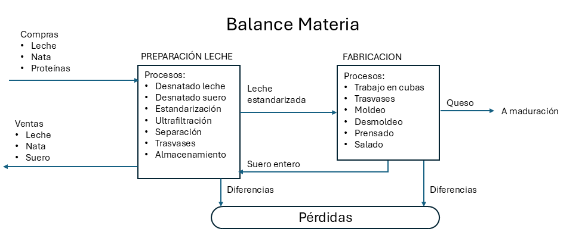
Balance de materia
Hemos organizado la información de los procesos de fábrica en dos grandes grupos, la preparación de leche y la fabricación. En la terminología del balance de materia, llamaremos a estos grupos balance de preparación (o balance líquido) y balance de fabricación.
Los diferentes procesos de manipulación de la materia prima en quesería tienen como consecuencia que en cada etapa se vayan produciendo pérdidas de materia, lo que hace que la cantidad de materia real que tenemos para su transformación en queso es siempre menor que la que hemos pagado.
La fórmula general de cualquier balance, heredada de los balances contables, es siempre:
El término Pérdidas recoge las diferencias entre entradas y salidas, para que pueda producirse la identidad de los dos términos a cada lado del signo igual (=)
Aunque en este esquema indicamos de forma genérica las compras de leche, nata y otras materias primas, así como su envío a fabricación para obtener el queso, no debemos perder de vista que, en realidad, lo que pagamos al comprar la leche, y lo que transformamos en fábrica, es la grasa y la proteína de la leche. Por esta razón, resulta más conveniente representar en nuestros balances los movimientos de MG y MP:
Balance de MG
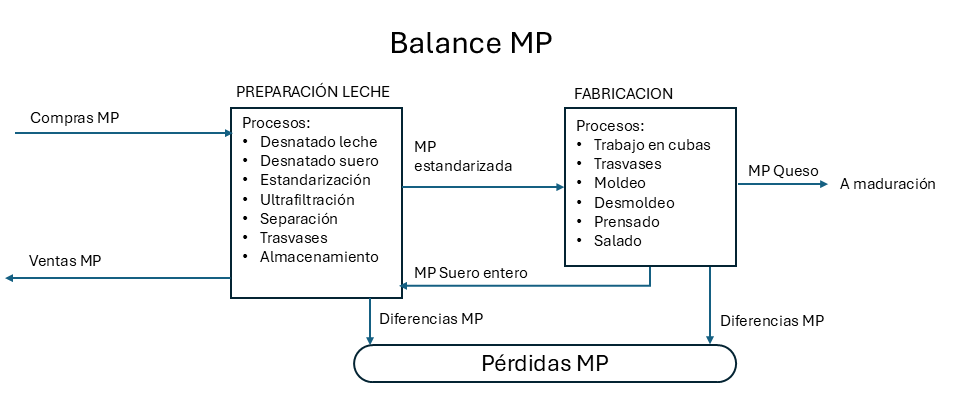
Balance de MP
10.5 Análisis de un caso
Comenzaremos con un caso simple, en el que se utiliza un solo tipo de leche, que no se estandariza en MG ni en MP, y se envía a fabricación después de pasteurización. En nuestro ejemplo, los datos que vamos a utilizar están registrados en ficheros de datos en formato CSV, que incluyen las entradas de leche en fábrica y el envío a fabricación, con sus las analíticas correspondientes. Analizaremos el conjunto de datos con hoja de cálculo y con Python, siguiendo nuestra línea de trabajo.
Descripción del caso
En nuestra quesería de ejmplo se recibe leche de vaca de domingo a jueves, y se fabrica de lunes a viernes. De lunes a jueves se fabrican unos 5000 L de manera bastante regular, y los viernes se fabrica el resto de leche para que el stock quede a cero el fin de semana.
Los movimientos diarios de compra de leche y de envío a fabricación se recogen en un fichero csv organizado según los principios de tidy data.
La leche se recibe en una cisterna, se pesa en báscula, con lo que se dispone de los kilos de leche que se dan de entrada; se convierten a litros utilizando una densidad estándar de 1,030 g/ml. En el momento de la recepción de la leche, se hacen análisis de materia grasa y proteína, y los resultados analíticos se recogen en g/L.
La leche enviada a fabricación es analizada diariamente en grasa y proteína mediante una muestra recogida en la cuba; los resultados se expresan en g/L.
No se hace control diario de existencias; la leche se recibe sobre un tanque de recepción en el que puede quedar algún resto de leche de un día para otro, no tiene por qué enviarse a fabricación cada día el 100% de la entrada. Pero la fabricación del viernes debe recoger el 100% de la leche existente, de forma que las existencias queden a cero y el lunes se empiece sin stock.
Entre las entradas y el envío a fabricación hay pérdidas de materia y, simultáneamente, un incremento de volumen por arrastres de agua.
Debido a que las entradas para la fabricación semanal tienen lugar el domingo, se considera una semana de domingo a sábado (la semana ISO es lunes a domingo).
El fichero de datos que utilizaremos acumula las recepciones y fabricación de un año completo.
El fichero CSV incluye el peso de báscula de la cisterna de entrada, la conversión en litros, el envío a fabricación, también en litros, y el queso fabricado, junto con las diversas analíticas. Por comodidad y para evitar errores de medida y de muestreo (desigual reparto de la MG), la fábrica utiliza la densidad estándar de 1,030 g/ml de leche para convertir los kilos de leche en litros, como hemos dicho. Tenemos una columna con el stock de leche diario, que no controlamos analíticamente, y que queda a cero semanalmente.
La existencia de un stock de leche diario sin analizar nos impide hacer un balance de materia diario, ya que tendríamos que tener en cuenta las diferencias de stock, y no tenemos los análisis correspondientes. Por otra parte, en una fase inicial, descubriremos que las variaciones analíticas y de medida pueden despistarnos introduciendo valores que no podemos explicar y que en realidad se deben a errores analíticos o de muestreo.
Por ello es más conveniente hacer el balance de materia semanalmente, asegurandonos de que los stocks de leche han quedado a cero. Al acumular los resultados, minimizamos los errores de medida.
Haremos entonces el balance de la primera semana de forma manual, para formalizar los conceptos, y luego intentaremos una mínima automatización mediante el uso de las tablas dinámicas de Excel; gracias al campo de fecha, podemos obtener mediante funciones python o fórmulas Excel tanto la semana del año como el día de la semana. Haremos uso de esta funcionalidad para agrupar el balance por semanas.
En Excel vamos a desarrollar sólo el balance de la materia grasa, el balance de la proteína queda como ejercicio complementario.
El balance de la materia grasa paso a paso
Una vez leído el fichero CSV en Excel, lo primero que haremos será convertir el formato en una tabla, lo que nos permitirá definir las fórmulas en la primera fila con facilidad.
Fichero de datos en formato CSV leído en Excel
Para ello, con el cursor dentro del área de datos, utilizamos la opción Menú > Insertar > Tabla. Aceptamos la opción por defecto y convertimos el formato del rango completo.
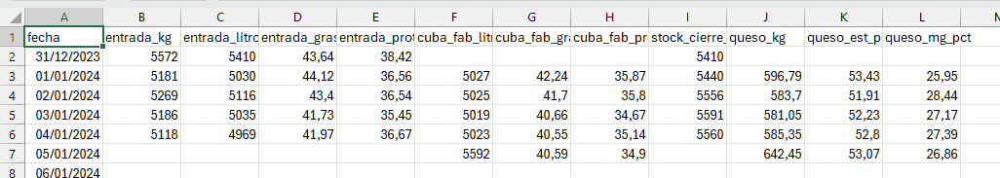
Hoja de datos en formato tabla
La tabla de datos nos muestra las entradas de datos en domingo, sin fabricación en cuba, y las fabricaciones en viernes, a partir del stock del jueves, sin que haya entradas en el día. Como hemos dicho, simplificaremos el balance haciendo un análisis semanal, para lo cual totalizamos los kilos de materia grasa y de proteína en cada etapa, mediante los análisis de los que disponemos. Añadimos estos totales como columnas nuevas a la derecha de la tabla, columna a columna. El formato tabla tiene muchas ventajas para el análisis de datos, una de ellas es la definición de las fórmulas de cálculo que afectan a la tabla en la primera fila; una vez definidas las fórmulas, la tabla replica el cálculo en el resto de la tabla, de manera semejante a cómo se calculan las columnas en un dataframe de Python.
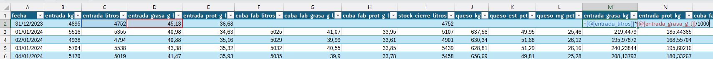
Añadiendo las columnas de materia grasa y proteína
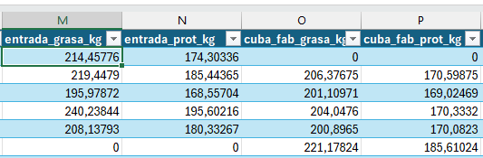
Añadiendo nuevas columnas a la tabla
Hemos añadido cuatro nuevas columnas:
entrada_grasa_kg, calculada como \[entrada\_grasa\_kg=(entrada\_litros)*(entrada\_grasa\_g\_l)/1000\]
entrada_prot_kg, calculada como \[entrada\_prot\_kg=(entrada\_litros)*(entrada\_prot\_g\_l)/1000\]
cuba_fab_grasa_kg, calculada como \[cuba\_fab\_grasa\_kg=(cuba\_fab\_litros)*(cuba\_fab\_grasa\_g\_l)/1000\]
cuba_fab_prot_kg, calculada como \[cuba\_fab\_prot\_kg=(cuba\_fab\_litros)*(cuba\_fab\_prot\_g\_l)/1000\]
No tenemos más que totalizar las cantidades de materia en la leche de entrada y en cuba para estimar el balance de pérdidas. Como el formato de la tabla no nos permite hacer los totales con fcilidad sin insertar líneas, y sabemos que no debemos modificar nuestra tabla de datos, copiamos y pegamos en una nueva pestaña para construir la tabla de balance.
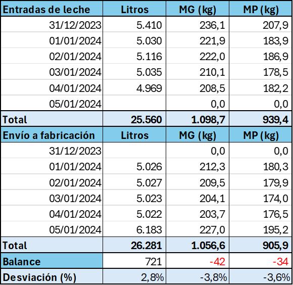
Balance de materia semanal sencillo
El balance de materia entre las entradas de leche y la leche en cubas nos dice que en esta semana hemos perdido en esta parte del proceso 45 kg de grasa (-4,1%) y 39 kg de proteína (-4,3%) en la semana, y que hemos ganado 135 litros de leche (+0,5%), seguramente por los arrastres de agua añadida.
Automatizando el análisis en Excel
En el análisis que hacabamos de hacer, hemos hecho los cálculos y diseñado la tabla de forma manual para la primera semana del año. Esto quiere decir que, si utilizamos este método para las semanas sucesivas, deberemos repetir 52 veces el mismo copia y pega, formato, etc, lo que resulta bastante engorroso y sujeto a errores. Sería más adecuado que nuestro sistema de análisis pudiese leer la tabla de datos y actualizar la información a medida que vamos añadiendo días de fabricación, sin tener que intervenir manualmente.
Afortunadamente, las tablas dinámicas de Excel nos permiten un cierto grado de automatización; aunque no es todo lo flexible que sería de desear, si poedmos hacer el recálculo sin necesidad de modificar la tabla, una vez que se ha diseñado.
Para construir la tabla dinámica, con el cursor dentro del rango de nuestra tabla de datos, simplemente insertamos la tabla desde el Menú > Insertar > Tabla dinámica.
Una vez creada la tabla en una nueva pestaña de Excel, vamos a colocar el nombre del campo fecha en filas, lo que creará los nuevos campos de fecha Años(fecha). Trimestres (fecha), Meses(fecha) y fecha, éste último será el que guarde los valores originales de la columna. Retiramos de las filas los Trimestres y la fecha para quedarnos sólo con el Año y los Meses. Podríamos hacer una agrupacion semanal incluyendo una columna en nuestra tabla que nos indique la semana; eso se puede hacer mediante la fórmula de Excel =NUM.DE.SEMANA() aplicada a la fecha.
Ahora arrastramos al área de Valores los campos de kg totales que hemos calculado: entrada_grasa_kg, cuba_fab_grasa_kg y queso_mg_kg. Vamos a construir el balance de materia grasa entre estas tres etapas.
Una vez insertados los tres campos, formateamos los valores para que sólo muestren un decimal, en la opción de Configuración de campo de valor, que aparece al hacer click con el botón derecho dentro de la tabla, con el cursor sobre el campo que queremos formatear.
A continuación, necesitamos crear cuatro campos calculados, dos para las diferencias de materia en kilos y otros dos para las diferencias en porcentaje. Las fórmulas a utilizar en los campos calculados son:
Una vez creados los campos, damos formato a los valores numéricos y formateamos el encabezado para obtener la tabla:
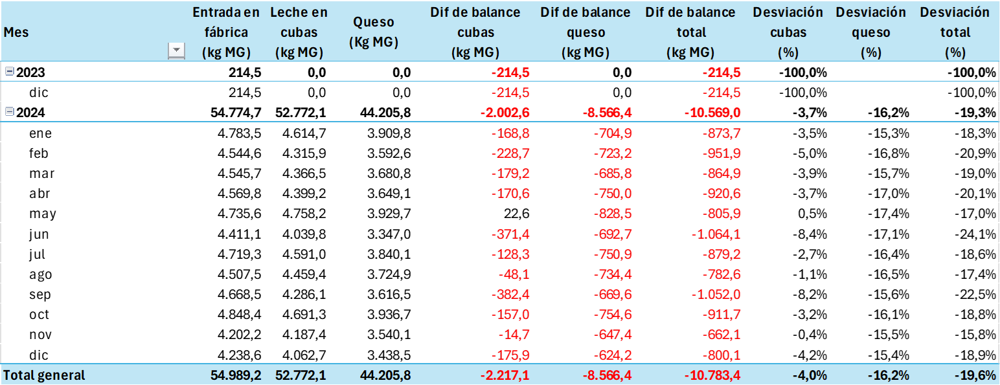
Tabla dinámica con el balance de materia grasa
Análisis de la tabla de balance de materia grasa
El balance de materia grasa nos muestra que en el año hemos perdido 10.703 kilos de materia grasa (19.6% de lo comprado), que se reparten entre el balance líquido (2.217 kg) y la elaboración propiamente dicha (8.566 kg). Las pérdidas del balance líquido suponen un 4% de lo comprado, mientras que las perdidas en la elaboración suponen el 16.2% de lo comprado.
Estas pérdidas suponen 59.401 euros, a nuestro precio calculado de 5,55 euros/kg de MG.
Hay que tener en cuenta que en el balance de queso deberíamos tener en cuenta el análisis del suero. Las pérdidas en fabricación se corresponden en su mayoría con las pérdidas en el suero; es necesario diferenciar las pérdidas que son inherentes a nuestro proceso, de las pérdidas extraordinarias por desviaciones en la tecnología o cualquier otro problema. Como no analizamos el suero, no podremos dar respuesta hasta el análisis detallado de los rendimientos, que veremos en el próximo capítulo.
El balance de materia de la proteína
Para hacer el balance de materia de la proteína, no tenemos más que repetir los pasos que hemos dado en el análisis de la materia grasa, sustituyendo los campos correspondientes en la tabla dinámica.
En el caso del ejemplo, tenemos el inconveniente de que no disponemos de análisis de la proteína del queso, porque la empresa no lo hace. Sólo podemos hacer entonces el balance de materia de la fase líquida, desde la recepción hasta la cuba. Veremos la desviación del consumo de proteína en el capítulo siguiente, mediante el análisis de los rendimientos queseros. Si dispusiéramos de análisis de proteína del queso, sólo tendríamos que incorporar el campo(columna) con sus valores a la tabla dinámica para disponer del análisis completo.
10.7 Diseñar un plan de acción para la reducción de pérdidas
Mediante nuestro balance de materia, hemos detectado el nivel de pérdidas que tenemos en nuestro proceso. Este conocimiento no es algo que hagamos porque sí, sino con el objetivo de establecer acciones para reducirlas y mejorar los resultados de la empresa.
El “problema” de los finos de queso en el suero y de las roturas diversas en el proceso
Hay que tener en cuenta que consideramos pérdidas de balance sólo aquellas que son diferencias entre entradas y salidas. Por ejemplo, pérdidas de finos (restos de queso en el proceso de moldeo, o en el suero) que han sido bien medidas en el suero pueden no ser una pérdida de balance si están bien contabilizadas como finos en las salidas de producción, es decir, la cantidad de materia en los finos está bien pesada y analizada, y no hay diferencias entre entradas y salidas. Sin embargo, son pérdidas de rendimiento porque esos finos no se recuperan en el queso, y tendremos que establecer acciones tecnológicas para reducirlos.
Para incorporarlos al balance de materia, tendríamos que incluir en nuestra hoja de datos una columna finos en la que fuésemos anotando las cantidades producidas diariamente en la fabricación y sus análisis, y entonces podríamos incluirlos en la hoja de balance. Este control es un tanto complicado de hacer en rutina en la mayoría de los casos, debido tanto a la imprecisión en la recogida y control analítico de los restos de queso que se generan en la quesería, como a la necesidad de obtener los finos del suero mediante filtración o centrifugado, que no siempre es posible, y su análisis de forma fiable.
Por ello, a pesar de que el concepto de pérdida de balance es el que hemos explicado, casi siempre resulta más práctico considerar roturas, restos y finos como pérdidas, puesto que no hemos sido capaces de recuperar esa materia en el queso.
Lo importante es que las acciones que tomemos para reducir estos restos redundarán en una mejora del resultado del balance, al mejorar la retención de materia en el queso.
Causas de pérdidas en el balance líquido
Entre las diversas causas de pérdidas en el balance líquido, podemos considerar:
Mala calibración de la báscula de entrada o de los contadores de medida en la descarga
Pérdidas en válvulas que cierran mal y no tienen un buen programa de mantenimiento preventivo de cierres y juntas
Operaciones mal descritas y que dejan demasiado espacio a las decisiones individuales que pueden ser improvisadas
Falta de auditorías de procesos que permitan evaluar la calidad de las operaciones y detectar los puntos críticos de mala operación
Procedimientos de arrastres (fin de línea, depósitos) mal temporizados, lo que hace que sean demasiado cortos (pérdidas de materia) o demasiado largos (dilución excesiva)
Mal estado de los útiles de corte en la cuba, lo que aumenta las pérdidas de finos en la cuba
Información insuficiente (pocas muestras) para evaluar bien el balance y conocer los puntos de pérdida
Desconocimiento del error de medida (muestreo, variabilidad de analistas, repetibilidad de los análisis), lo que lleva a correcciones que pueden no corresponder a valores de pérdida real sino a errores analíticos.
Errores en el control de los stocks a final de día o de la semana
Insuficiente formación en la toma de muestras, que se realiza de manera incorrecta
Uso de bombas centrífugas para el transporte de cuajada, lo que hace que aumente la cantidade de finos que se pierden en el suero (estrictamente, puede no ser una pérdida de balance sino de rendimiento quesero)
El trabajo del tecnólogo quesero consistirá en identificar las causas específicas de las pérdidas en su caso concreto, y proponer y aplicar planes de acción para reducirlas. Los objetivos a lograr con estos planes de acción se ejecutan inmediatamente cuado es posible, o se incorporan al presupuesto del año siguiente, de tal manera que las mejoras previstas se puedan aplicar al coste presupuestado del producto, y así mejorar la competitividad del precio.
Los planes de acción de reducción de pérdidas deben actualizarse permanentemente, de forma que el proceso de mejora sea un trabajo que esté siempre en marcha.
10.8 Análisis con Python
En este apartado vamos a utilizar Python para ver la evolución y tendencias de nuestras pérdidas a lo largo del año. Python puede también programarse para generar todas las tablas de desviaciones, aunque no entraremos en ese detalle para no complicar la programación, sólo recurriremos a esta herramienta para la visualización.
Cargamos nuestro CSV en un dataframe y procedemos a realizar los gráficos que nos interesan.
# formato de fecha a la columna 'fecha'df['fecha'] = pd.to_datetime( df['fecha'], format='%d/%m/%Y', # Formato Día/Mes/Año errors='coerce'# Clave: convierte los valores que no puede leer a NaT (Not a Time))# crear index con fecha# 2. Limpiar NaT y establecer el índicedf['fecha_index'] = df['fecha']df.dropna(subset=['fecha_index'], inplace=True) # eliminamos los casos en los que no hay una fecha correctadf.set_index('fecha_index', inplace=True)df.sort_index(inplace=True)
Ahora calculamos los totales de materia que han entrado en la quesería y los envíos a fabricación, añadiendo nuevas columnas sobre la marcha.
Mostrar código
df['entrada_mg_kg'] = df['entrada_litros'] * df['entrada_grasa_g_l']/1000# nueva columna de totaldf['entrada_mp_kg'] = df['entrada_litros'] * df['entrada_prot_g_l']/1000# nueva columna de totaldf['cuba_fab_mg_kg'] = df['cuba_fab_litros'] * df['cuba_fab_grasa_g_l']/1000# nueva columna de totaldf['cuba_fab_mp_kg'] = df['cuba_fab_litros'] * df['cuba_fab_prot_g_l']/1000# nueva columna de total# Llenamos posibles valores vacíos (NaN) con 0 por seguridad antes de agruparcolumnas_a_limpiar = ['entrada_mg_kg', 'entrada_mp_kg', 'cuba_fab_mg_kg', 'cuba_fab_mp_kg']df[columnas_a_limpiar] = df[columnas_a_limpiar].fillna(0)
Como las existencias de leche quedan siempre a cero en fin de semana (los viernes), podemos totalizar las entradas en fábrica por semanas, para comparar con los envíos a fabricación y hacer el balance de materia correspondiente. Creamos un nuevo dataframe para organizar esta información semanal.
Mostrar código
df_semanal = ( df.drop(columns=['fecha']) # Eliminamos la columna de fecha diaria que no necesitamos .resample('W-SUN', closed='left', label='left') # definimos las semanas desde el domingo, ya que la entrada de leche empieza ese día .sum() # totalizamos la suma agrupando por la semana que acabamos de definir)# Creamos de nuevo la columna 'semana' a partir del índice de tiempo# .isocalendar().week devuelve el número de semana estándar (ISO)df_semanal['semana'] = df_semanal.index.isocalendar().week# Reordenamos las columnas para que 'semana' sea la primera# Esto facilita la vista en el CSV o en el gráficocolumnas = ['semana'] + [col for col in df_semanal.columns if col !='semana']df_semanal = df_semanal[columnas]df_semanal.head()
semana
entrada_kg
entrada_litros
entrada_grasa_g_l
entrada_prot_g_l
cuba_fab_litros
cuba_fab_grasa_g_l
cuba_fab_prot_g_l
stock_cierre_litros
queso_kg
queso_est_pct
queso_mg_pct
entrada_mg_kg
entrada_mp_kg
cuba_fab_mg_kg
cuba_fab_mp_kg
fecha_index
2023-12-31
52
26223.0
25458.0
211.84
177.72
25593.0
201.93
169.11
25657.0
3258.70
255.46
129.33
1078.26075
904.23888
1033.60880
865.64918
2024-01-07
1
25095.0
24365.0
212.08
175.28
24497.0
201.63
167.98
21760.0
3155.62
258.61
134.96
1033.89070
854.00138
988.10043
823.13543
2024-01-14
2
25869.0
25114.0
208.81
178.72
25231.0
199.48
171.07
25831.0
3217.39
264.56
137.39
1047.14225
897.23297
1006.70090
863.25871
2024-01-21
3
25232.0
24498.0
211.75
173.58
24622.0
201.39
166.10
24494.0
3151.45
260.43
135.66
1037.00814
849.56760
991.84185
817.83855
2024-01-28
4
24909.0
24184.0
208.64
182.06
24316.0
198.90
174.04
22831.0
2935.48
259.46
134.03
1008.90138
881.16714
967.06529
846.86813
Ahora podemos visualizar gráficamente nuestras entradas semanales de leche, tanto de litros como de grasa y proteína.
Mostrar código
# Visualizaciónplt.figure(figsize=(8, 4))df_semanal['entrada_litros'].plot(kind='line', marker='o', figsize=(10, 5), color='darkblue')plt.title('Entradas semanales de leche en fábrica (Dom-Sáb)')plt.xlabel('Fecha de inicio de semana (domingo)')plt.ylabel('Total litros recibidos')plt.grid(True, alpha=0.3)plt.show()
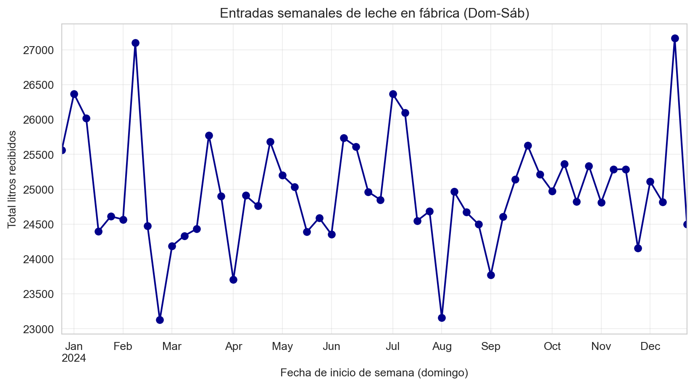
Mostrar código
# Visualización# plt.figure(figsize=(8, 4))sns.histplot(data=df_semanal, x='entrada_litros', kde=True)plt.title('Entradas semanales de leche en fábrica (Dom-Sáb)')plt.xlabel('Total litros recibidos')plt.ylabel('Frecuencia')plt.grid(True, alpha=0.3)plt.show()
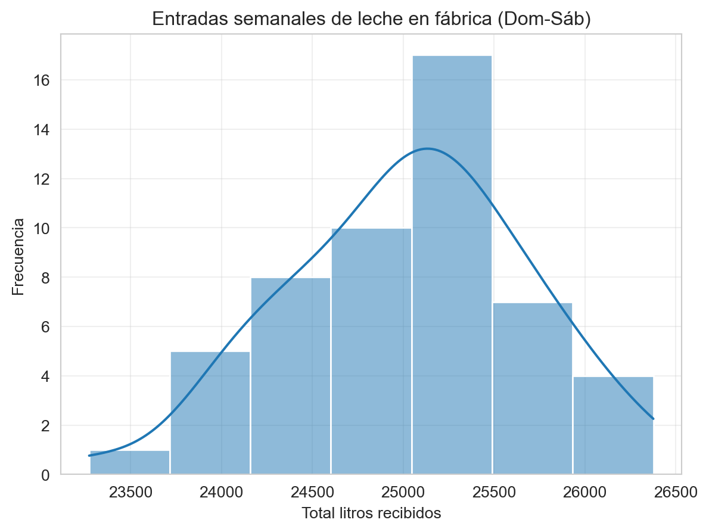
Mostrar código
# 1. Cálculo de mediasmedia_grasa = df_semanal['entrada_mg_kg'].mean()media_proteina = df_semanal['entrada_mp_kg'].mean()plt.figure(figsize=(8, 4))# 2. Graficamos las líneas de datosplt.plot(df_semanal.index, df_semanal['entrada_mg_kg'], marker='o', color='orange', label='Grasa (kg)', zorder=3)plt.plot(df_semanal.index, df_semanal['entrada_mp_kg'], marker='s', color='green', label='Proteína (kg)', zorder=3)# 3. Añadimos las líneas de media horizontal# Usamos linestyle='--' para que se diferencien de los datos realesplt.axhline(media_grasa, color='darkorange', linestyle='--', alpha=0.8, label=f'Media Grasa ({media_grasa:.1f})')plt.axhline(media_proteina, color='darkgreen', linestyle='--', alpha=0.8, label=f'Media Proteína ({media_proteina:.1f})')# Configuración del gráficoplt.title('Evolución semanal con medias (grasa y proteína)', fontsize=14)plt.xlabel('Fecha de inicio de semana', fontsize=12)plt.ylabel('Kilos totales semanales', fontsize=12)# Leyenda fuera a la derechaplt.legend(bbox_to_anchor=(1.05, 1), loc='upper left', borderaxespad=0.)plt.grid(True, linestyle=':', alpha=0.5)plt.xticks(rotation=45)plt.tight_layout()plt.show()
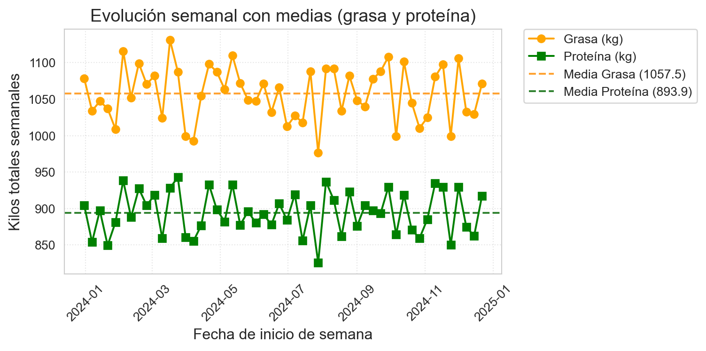
Mostrar código
# Creamos una figura con 2 filas (una para cada gráfico)# sharex=True hace que ambos compartan la misma escala en el eje Xfig, axes = plt.subplots(2, 1, figsize=(8, 4), sharex=True)# Primer histograma (Grasa) - Se ubica en axes[0]sns.histplot(df_semanal['entrada_mg_kg'].abs(), color="orange", kde=True, ax=axes[0])axes[0].set_title('Entrada total de materia en fábrica (kg): grasa', fontsize=12)axes[0].set_ylabel('Frecuencia (Semanas)')# Segundo histograma (Proteína) - Se ubica en axes[1]sns.histplot(df_semanal['entrada_mp_kg'].abs(), color="green", kde=True, ax=axes[1])axes[1].set_title('Entrada total de materia en fábrica (kg): proteína', fontsize=12)axes[1].set_ylabel('Frecuencia (Semanas)')axes[1].set_xlabel('Kilos')# Ajustes finalesplt.tight_layout() # Evita que los títulos se encimen con los ejesplt.show()
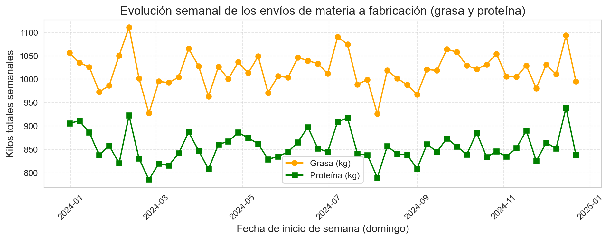
También podemos visualizar los envíos a fabricación, en litros y por componentes de materia.
Mostrar código
# 1. Calculamos los estadísticosmedia = df_semanal['cuba_fab_litros'].mean()# 2. Visualizaciónplt.figure(figsize=(8, 4))# Gráfico principaldf_semanal['cuba_fab_litros'].plot(kind='line', marker='o', color='darkblue', label='Litros enviados')# Línea de la Media (roja, discontinua)plt.axhline(media, color='red', linestyle='--', linewidth=1.5, label=f'Media: {media:.2f}')# Configuración del gráficoplt.title('Envíos semanales de leche a fabricación (Lun-Vier)', fontsize=14)plt.xlabel('Fecha de inicio de semana: domingo', fontsize=12)plt.ylabel('Total litros enviados', fontsize=12)plt.legend() # Importante para mostrar qué línea es cada cualplt.grid(True, alpha=0.3)plt.tight_layout()plt.show()
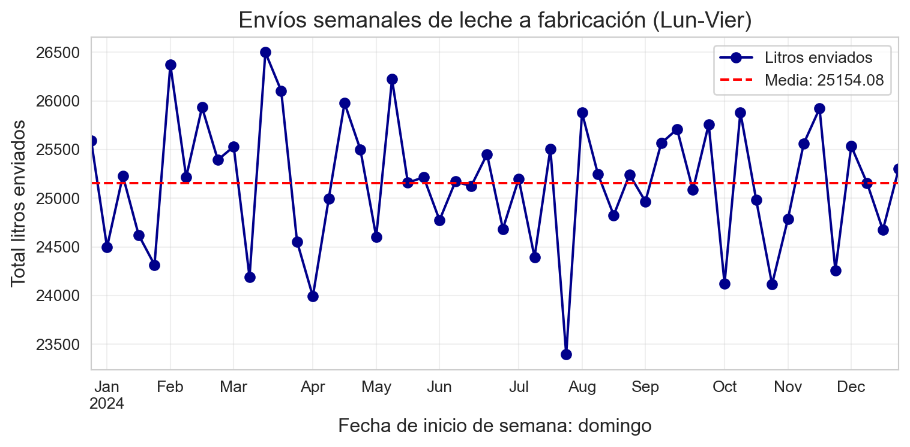
Mostrar código
# 1. Calculamos los estadísticos para ambas variablesmean_mg = df_semanal['cuba_fab_mg_kg'].mean()mean_mp = df_semanal['cuba_fab_mp_kg'].mean()# 2. Visualizaciónplt.figure(figsize=(8, 4))# Graficamos las líneas principalesplt.plot(df_semanal.index, df_semanal['cuba_fab_mg_kg'], marker='o', color='orange', label='Grasa (kg)', linewidth=2)plt.plot(df_semanal.index, df_semanal['cuba_fab_mp_kg'], marker='s', color='green', label='Proteína (kg)', linewidth=2)# Añadimos líneas de referencia para GRASA (Naranja)plt.axhline(mean_mg, color='darkorange', linestyle='--', alpha=0.7, label=f'Media Grasa: {mean_mg:.1f}')# Añadimos líneas de referencia para PROTEÍNA (Verde)plt.axhline(mean_mp, color='darkgreen', linestyle='--', alpha=0.7, label=f'Media Proteína: {mean_mp:.1f}')# Configuración del gráficoplt.title('Evolución semanal de los envíos a fabricación de grasa y proteína', fontsize=14)plt.xlabel('Fecha de inicio de semana (domingo)', fontsize=12)plt.ylabel('Kilos totales semanales', fontsize=12)# Colocamos la leyenda fuera o ajustada para que no tape los datosplt.legend(bbox_to_anchor=(1.05, 1), loc='upper left', fontsize=9)plt.grid(True, linestyle='--', alpha=0.3)plt.xticks(rotation=45)plt.tight_layout()plt.show()
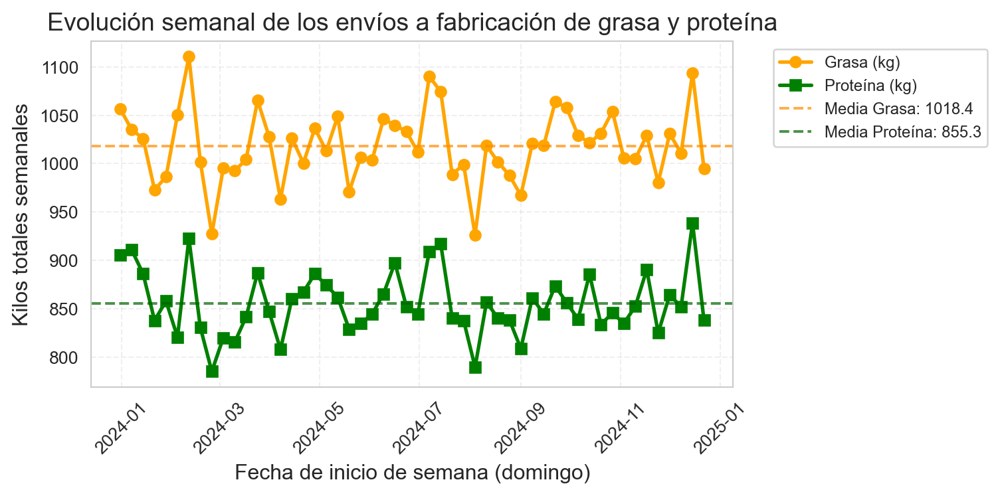
Mostrar código
# Creamos una figura con 2 filas (una para cada gráfico)# sharex=True hace que ambos compartan la misma escala en el eje Xfig, axes = plt.subplots(2, 1, figsize=(8, 4), sharex=True)# Primer histograma (Grasa) - Se ubica en axes[0]sns.histplot(df_semanal['cuba_fab_mg_kg'].abs(), color="orange", kde=True, ax=axes[0])axes[0].set_title('Materia puesta en fabricación (kg): grasa', fontsize=12)axes[0].set_ylabel('Frecuencia (Semanas)')# Segundo histograma (Proteína) - Se ubica en axes[1]sns.histplot(df_semanal['cuba_fab_mp_kg'].abs(), color="green", kde=True, ax=axes[1])axes[1].set_title('Materia puesta en fabricación (kg): proteína', fontsize=12)axes[1].set_ylabel('Frecuencia (Semanas)')axes[1].set_xlabel('Kilos')# Ajustes finalesplt.tight_layout() # Evita que los títulos se encimen con los ejesplt.show()
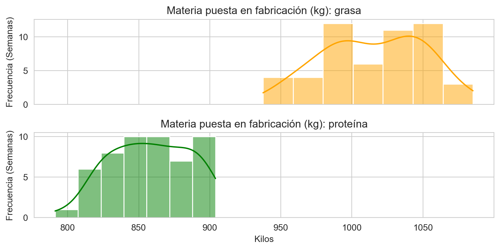
Ahora podemos hacer el balance de materia semanal, calculando la desviación semanal entre entradas y salidas, y lo que representa esta pÉrdida en porcentaje respecto a la entrada de materia.
Mostrar código
### Balance de Materia (Salida - Entrada)# La falta de producto queda como negativo al hacer Salida - Entradadf_semanal['balance_liquido_mg'] = df_semanal['cuba_fab_mg_kg'] - df_semanal['entrada_mg_kg']df_semanal['balance_liquido_mp'] = df_semanal['cuba_fab_mp_kg'] - df_semanal['entrada_mp_kg']# Porcentaje de pérdida respecto a la entradadf_semanal['perdida_mg_pct'] = df_semanal['balance_liquido_mg'] / df_semanal['cuba_fab_mg_kg'] *100df_semanal['perdida_mp_pct'] = df_semanal['balance_liquido_mp'] / df_semanal['cuba_fab_mp_kg'] *100
Una vez completados los cálculos, podemos exportar los datos semanales a un fichero CSV para análisis posterior en la hoja de cálculo, para hacer los gráficos y tablas que nos interesen:
Mostrar código
# Exportar optimizado para Excel en españoldf_semanal.to_csv('datos/balance_materia_semanal.csv', sep=';', # Excel en español usa punto y coma para separar columnas decimal=',', # Excel en español usa la coma para los decimales encoding='utf-8-sig', # El '-sig' ayuda a que Excel reconozca tildes y símbolos index=True# Mantenemos el índice porque ahí está la fecha del domingo)
# 1. Calculamos los estadísticos para ambas variablesmean_mg = df_semanal['balance_liquido_mg'].mean()mean_mp = df_semanal['balance_liquido_mp'].mean()# 2. Visualizaciónplt.figure(figsize=(10, 4))# Graficamos las líneas principalesplt.plot(df_semanal.index, df_semanal['balance_liquido_mg'], marker='o', color='orange', label='Grasa (kg)', linewidth=2)plt.plot(df_semanal.index, df_semanal['balance_liquido_mp'], marker='s', color='green', label='Proteína (kg)', linewidth=2)# Añadimos líneas de referencia para GRASA (Naranja)plt.axhline(mean_mg, color='darkorange', linestyle='--', alpha=0.7, label=f'Media Grasa: {mean_mg:.1f}')# Añadimos líneas de referencia para PROTEÍNA (Verde)plt.axhline(mean_mp, color='darkgreen', linestyle='--', alpha=0.7, label=f'Media Proteína: {mean_mp:.1f}')# Configuración del gráficoplt.title('Evolución semanal de las pérdidas de balance de grasa y proteína', fontsize=14)plt.xlabel('Fecha de inicio de semana (domingo)', fontsize=12)plt.ylabel('Kilos totales semanales', fontsize=12)# Colocamos la leyenda fuera o ajustada para que no tape los datosplt.legend(bbox_to_anchor=(1.05, 1), loc='upper left', fontsize=9)plt.grid(True, linestyle='--', alpha=0.3)plt.xticks(rotation=45)plt.tight_layout()plt.show()
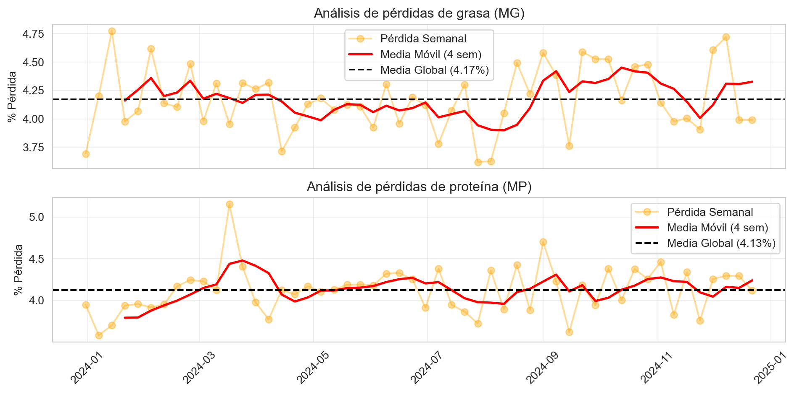
Notemos que las cantidades negativas se representan en el eje de manera que las más negativas están más abajo, y la menos negativas, más arriba, más cerca del supuesto eje cero. En caso de ser necesario, se podrían representar como valores absolutos, y esto haría una representación más ajustada a la visualización que suele ser habitual. Por ejemplo, utilizando el método .abs() para representar el valor absoluto del porcentaje de pérdida:
Mostrar código
# Visualización de las dos líneasplt.figure(figsize=(8, 4))# Graficamos ambas columnasplt.plot(df_semanal.index, df_semanal['perdida_mg_pct'].abs(), marker='o', color='orange', label='Pérdidas de grasa (kg)')plt.plot(df_semanal.index, df_semanal['perdida_mp_pct'].abs(), marker='s', color='green', label='Pérdidas de proteína (kg)')# Configuración del gráficoplt.title('Evolución semanal de las pérdidas de balance (grasa y proteína) en porcentaje', fontsize=14)plt.xlabel('Fecha de inicio de semana (domingo)', fontsize=12)plt.ylabel('Porcentaje de pérdidas semanales', fontsize=12)plt.legend() # Muestra la leyenda para distinguir las líneasplt.grid(True, linestyle='--', alpha=0.5)plt.xticks(rotation=45)plt.tight_layout()plt.show()
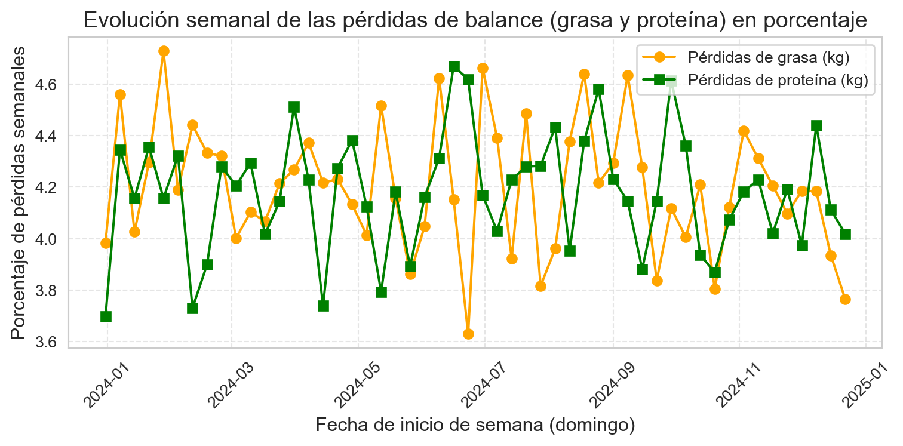
Mostrar código
# Creamos una figura con 2 filas (una para cada gráfico)# sharex=True hace que ambos compartan la misma escala en el eje Xfig, axes = plt.subplots(2, 1, figsize=(8, 4), sharex=True)# Primer histograma (Grasa) - Se ubica en axes[0]sns.histplot(df_semanal['perdida_mg_pct'].abs(), color="orange", kde=True, ax=axes[0])axes[0].set_title('Distribución de pérdidas: Grasa (%)', fontsize=12)axes[0].set_ylabel('Frecuencia (Semanas)')# Segundo histograma (Proteína) - Se ubica en axes[1]sns.histplot(df_semanal['perdida_mp_pct'].abs(), color="green", kde=True, ax=axes[1])axes[1].set_title('Distribución de pérdidas: Proteína (%)', fontsize=12)axes[1].set_ylabel('Frecuencia (Semanas)')axes[1].set_xlabel('Porcentaje')# Ajustes finalesplt.tight_layout() # Evita que los títulos se encimen con los ejesplt.show()
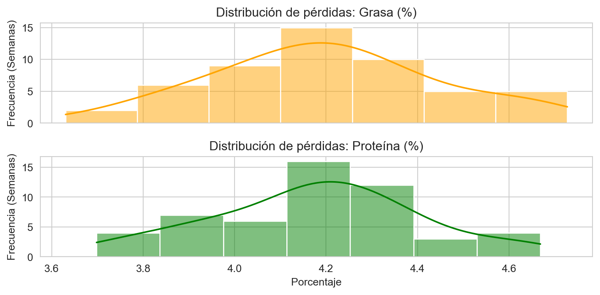
Podemos completar el análisis haciendo un análisis gráfico más completo, que nos muestre la pérdida media para el período junto con una media móvil de cuatro semanas que nos ayude a visualizar las posibles tendencias.
Mostrar código
# 1. CÁLCULOS (Asegúrate de que df_semanal ya esté cargado)mg_abs = df_semanal['perdida_mg_pct'].abs()mg_media_global = mg_abs.mean()mg_media_movil = mg_abs.rolling(window=4).mean()mp_abs = df_semanal['perdida_mp_pct'].abs()mp_media_global = mp_abs.mean()mp_media_movil = mp_abs.rolling(window=4).mean()# 2. Configuración de los subplots# He aumentado ligeramente el figsize para que los dos gráficos no se vean tan comprimidosfig, (ax1, ax2) = plt.subplots(2, 1, figsize=(10, 4), sharex=True)# --- GRÁFICA 1: MATERIA GRASA (MG) ---ax1.plot(df_semanal.index, mg_abs, marker='o', color='orange', alpha=0.4, label='Pérdida Semanal')ax1.plot(df_semanal.index, mg_media_movil, color='red', linewidth=2, label='Media Móvil (4 sem)')ax1.axhline(mg_media_global, color='black', linestyle='--', label=f'Media Global ({mg_media_global:.2f}%)')ax1.set_title('Análisis de pérdidas de grasa (MG)')ax1.set_ylabel('% Pérdida')ax1.grid(True, alpha=0.3)# La clave: configurar la leyenda directamente en el objeto ax1ax1.legend(bbox_to_anchor=(1.05, 1), loc='upper left', borderaxespad=0.)# --- GRÁFICA 2: MATERIA PROTEICA (MP) ---ax2.plot(df_semanal.index, mp_abs, marker='s', color='green', alpha=0.4, label='Pérdida Semanal') # Cambié color para distinguirax2.plot(df_semanal.index, mp_media_movil, color='darkgreen', linewidth=2, label='Media Móvil (4 sem)')ax2.axhline(mp_media_global, color='black', linestyle='--', label=f'Media Global ({mp_media_global:.2f}%)')ax2.set_title('Análisis de pérdidas de proteína (MP)')ax2.set_ylabel('% Pérdida')ax2.grid(True, alpha=0.3)# Configuramos la leyenda en el objeto ax2ax2.legend(bbox_to_anchor=(1.05, 1), loc='upper left', borderaxespad=0.)# Rotación de fechas y ajuste de diseñoplt.xticks(rotation=45)# Usamos rect para dejar espacio a la derecha y que la leyenda no se corteplt.tight_layout(rect=[0, 0, 0.85, 1]) plt.show()
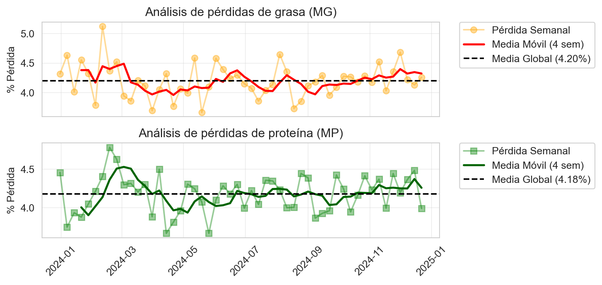
10.9 Otros casos más complejos: mezclas de leche, estandarizaciones diferentes, ventas de materia y otras situaciones
El caso que hemos visto es relativamente sencillo, para entender lo que es un balance de materia. Pero en realidad, pocas fábricas son tan sencillas. En la mayoría, a la leche de fabricación se le añade nata de suero, o se preparan leches estandarizadas en materia grasa y proteína, o bien se preparan leches de fabricación utilizando varios tipos de leche (vaca, cabra, oveja) en proporciones fijas o variables.
Lo que complica el análisis del balance es el diseño del sistema de información: en la medida en que tenemos más materias primas (nata de leche, nata de suero, retentado fresco, diferentes tipos de leche, diferentes preparaciones de leche para fabricación, etc), nos vemos obligados a llevar un control analítico sobre estas materias, además de un control de stocks. El sistema de información debe diseñarse para poder llevar este control que puede llegar a ser enormemente complejo y costoso, ya que los controles analiticos se multiplican. Pero, en todo caso, la filosofía del procedimiento es que si no queremos tener pérdidas desconocidas que no sepamos cómo atacar, nos vemos obligados a mantener un control analítico detallado de nuestras materias primas y nuestros stocks.
El uso de herramientas informáticas se hace imprescindible a medida que el diseño se hace más complejo. En estos casos, no es aconsejable diseñar un sistema sobre hojas de cálculo, sino de herramientas como python o R que permiten separar la lógica del análisis del modelo de datos, que se soporta en el sistema de información de la empresa. En estos casos, el diseño del sistema de análisis ligado al sistema de información debe ser realizado por técnicos especialistas, que diseñen un sistema que responda a las necesidades del técnico quesero para el análisis de su fabricación.
10.10 Resumen
En este capítulo hemos visto lo que es un balance de materia en la elaboración de queso. Hemos aprendido a configurar Excel para hacer un balance de materia grasa y hemos utilizado Python para ver las tendencias semanales de nuestras pérdidas durante un año completo.
Hemos visto también que la parte más importante de las pérdidas está en la fase de elaboración, pero el balance de materia no nos da ninguna clave de cómo explicar estos resultados. Para ello necesitamos estudiar en detalle los rendimientos queseros, y encontrar dónde está el origen de nuestras desviaciones. Así podremos establecer el plan de mejora que nos permita reducir las pérdidas.
En el capítulo siguiente veremos el análisis de la siguiente etapa, la transformación quesera.